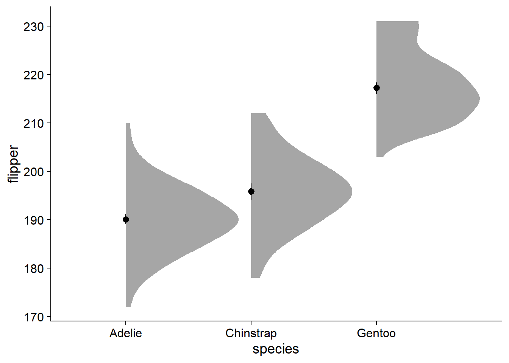

7 Vizualize
7.1 Show canvas
The metaphor I like to use with ggplot is that it’s like painting. First you buy and setup your canvas, then you can start adding elements that get layered on top of each other - so the order of your ggplot elements matters!
We specify cowplot::theme_half_open() at this early stage because we want to override some arguments in this theme with some new elements later on.
canvas <- ggplot(data = df,
aes(y = flipper_length_mm, # our dependent/response/outcome variable
x = species # our grouping/independent/predictor variable
)) +
cowplot::theme_half_open() # nice theme for publication
canvas # display our blank canvas
7.2 Most fundamental - 95% CI and mean
You could always just plot the mean and 95% CI (confidence intervals) and nothing else. However, like barplots, this comes at the cost of omitting the entire range of responses. We can plot the mean and its 95% CI with stat_summary():
canvas + # this is our previously-defined canvas object, it passes the appropriate variables and theme
stat_summary(fun.data = "mean_cl_normal") # Plot 95% CI and the mean
7.3 Adding Density Slab
Density and violin plots are based on kernel density, basically, a smoothed histogram of the data. Here, we add a density slab with ggdist::stat_slab():
canvas +
# density slab
ggdist::stat_slab() + # add a density slab
stat_summary(fun.data = "mean_cl_normal", show.legend = F)
You can see the y-axis stretches far higher and lower (170 - 230) than it did previously (190 - ~210). The major strength of this density slab method is that it visualizes the spread and skew of the data, which by default forces us to visualize the entire range of observations.
Perusing twitter conversations, some people do not like the aesthetic of a ‘lopsided’ density slab. On a more practical side, it becomes a bit more tricky to add elements like text for the mean in a legible way. To add some symmetry, we can change the density slab to violin using ggdist::stat_slab(side = "both"):
canvas +
# density slab
ggdist::stat_slab(
side = "both") + # change the density slab to violin
stat_summary(fun.data = "mean_cl_normal", show.legend = F) 
Many of us want to pick nice colors for our plots, in R, colors are defined with HEX codes (in this case, nova_palette[1] is #78AAA9).
You can find a generator for colorblind-accessible color palettes here, a useful tool for exploring HEX colors here, complete with colorblindness simulator at the bottom of the page, and a brief education primer, complete with colorblindness palette simulator, here.
Now we can color the violin geom with our desired Hex using fill. Notably, this only works when the fill argument is not inside of aes():
canvas +
# density slab
ggdist::stat_slab(side = "both",
fill = nova_palette[1]) + # color the violin geom with desired color
stat_summary(fun.data = "mean_cl_normal", show.legend = F) 
Instead of using boxplots, I like to fade my violins according to their quantile grouping. I find it makes the violin more informative, and has less visual clutter compared to the boxplot. We add the fading by modifying ggdist::stat_slab() with the argument, fill_ramp = stat(level):
canvas +
# density slab
ggdist::stat_slab(side = "both",
fill = nova_palette[1],
aes(fill_ramp = stat(level))) + # fade violins according to their quantile grouping
stat_summary(fun.data = "mean_cl_normal", show.legend = F) 
You can see by the legend that the fading matches to the inner 66% of the data, then the inner 95%, with no fading at the outer 5%. The inner 66% of the data holds no special meaning to me. I find that the inner/outer 50% is more intuitive .
- Alternative: change from 66% to 68%, reflecting +/-1 standard deviation, giving a more direct parallel to a critical descriptive statistic (as well as cohen’s d).
We can change the shaded quantiles from the inner 66% to 50% (and eliminate the 95% shading) using ggdist::stat_slab(..., .width = c(.50, 1)).
canvas +
# density slab
ggdist::stat_slab(side = "both",
aes(fill_ramp = stat(level)),
fill = nova_palette[1],
.width = c(.50, 1)) + # change quantiles for shading from 66% to 50% (and eliminate the 95% shading)
stat_summary(fun.data = "mean_cl_normal", show.legend = F) The violins are quite wide, let’s adjust their widths using scale = .4.
canvas +
# density slab
ggdist::stat_slab(side = "both",
aes(fill_ramp = stat(level)),
fill = nova_palette[1],
.width = c(.50, 1),
scale = .4) + # adjust slab width
stat_summary(fun.data = "mean_cl_normal", show.legend = F) 
The fading quantiles are probably better discussed orally or as a figure note, not being directly relevant to any statistical tests. We can get rid of the legend element for fading quantiles with guides(fill_ramp = "none"). Here, we also assign this ggplot to a new object, viofade, so we can see new code additions in the chunks more easily:
viofade <- canvas +
# density slab
ggdist::stat_slab(side = "both",
aes(fill_ramp = stat(level)),
fill = nova_palette[1],
.width = c(.50, 1),
scale = .4) +
stat_summary(fun.data = "mean_cl_normal", show.legend = F) +
guides(fill_ramp = "none") # get rid of legend element for fading quantiles
viofadeThis is a satisfactory version of the complete viofade, but there are more elements and styling we can do to effectively present the chart.
7.4 Adding Extra Elements
I find that having the written values of the different means makes the comparisons a bit more concrete. We can add this mean text using stat_summary():
Our viofade object does not include raw data. This is intentional because objects such as rainclouds, fadeclouds, and shadeplots tend to look very noisy after I add significance brackets. However, I still want people to see the sample size for our groups, which we can do using EnvStats::stat_n_text()
If you want your sample sizes under your axis values, check out this discussion
viofade_text <- viofade +
stat_summary(aes(label = round(..y..,1)),
fun = mean,
geom = "text",vjust = 5) +
EnvStats::stat_n_text(color = "grey60")
viofade_text
7.5 Adding Test Statistics
Especially for presentations and posters, it can be useful to have significance tests embedded directly in the plot. This is where we really benefit from having run some analyses beforehand
7.5.1 Create Reporting Functions
Create custom function, report_tidy_anova_etaci() that facilitate reporting of stats.
report_tidy_anova_etaci <- function(tidy_frame, # your tidy anova dataframe
term, # the predictor in your tidy anova dataframe
effsize = TRUE, # display the effect size
ci95 = TRUE, # display the 95% CI
ci.lab = TRUE, # display the "95% CI" label
teststat = TRUE, # display the F-score and degrees of freedom
pval = TRUE # display the p-value
){
text <- paste0(
ifelse(effsize == TRUE, paste0(
"\u03b7^2^ = ", #unicode for eta square
round(as.numeric(tidy_frame[term,"pes"]),2)),
""),
ifelse(ci95 == TRUE, paste0(
ifelse(ci.lab == TRUE,
paste0(", 95% CI ["), " ["),
round(as.numeric(tidy_frame[term,"pes_ci95_lo"]),2), ", ",
round(as.numeric(tidy_frame[term,"pes_ci95_hi"]),2),"]"),
""),
ifelse(teststat == TRUE,
paste0(", *F*(", tidy_frame[term,"Df"],
", ", tidy_frame["Residuals","Df"], ") = ",
round(as.numeric(tidy_frame[term,"F.value"]), 2)),
""),
ifelse(pval == TRUE, paste0(
", ", report_pval_full(tidy_frame[term,"Pr..F."])),
"")
)
return(text)
}We can add our omnibus ANOVA test by embedding our custom function in the labs element, labs(subtitle = report_tidy_anova_etaci(flipper_anova,"species")):
By default, ggplot doesn’t allow markdown styling, so we have weird stars instead of our desired formatting. We can enable markdown styling in the subtitle Using theme(plot.subtitle = ggtext::element_markdown())
viofade_text_stats <- viofade_text +
labs(subtitle = report_tidy_anova_etaci(flipper_anova,"species")) +
theme(plot.subtitle = ggtext::element_markdown())
viofade_text_statsWe can also customize our anova extraction function, report_tidy_anova_etaci() to show less information in the subtitle.
7.6 Add Significance Brackets
Adding significance brackets using the function ggpubr::geom_bracket(), and our previously-defined object flipper_emmeans_contrasts. You’ll have to manually select and place the appropriate contrast.
viofade_text_stats_bracket1 <- viofade_text_stats +
ggpubr::geom_bracket(inherit.aes = FALSE,
tip.length = 0.02,
vjust = 0,
xmin = 1,
xmax = 2,
y.position = 220 ,
label.size = 2.5,
label = paste0(flipper_emmeans_contrasts[flipper_emmeans_contrasts$contrast ==
'Adelie - Chinstrap', "p_no_it"])
)
viofade_text_stats_bracket1You can also add some additional text to the labels for your significance brackets using ggpubr::geom_bracket(..., label = paste0(...))
viofade_text_stats_bracket2 <- viofade_text_stats_bracket1 +
ggpubr::geom_bracket(inherit.aes = FALSE,
tip.length = 0.02,
vjust = 0,
xmin = 2,
xmax = 3,
y.position = 227 ,
label.size = 2.5,
label = paste0("My hypothesis, ",
flipper_emmeans_contrasts[flipper_emmeans_contrasts$contrast ==
'Chinstrap - Gentoo', "p_no_it"]))Style on the axis titles with theme(), ylab(), and xlab()